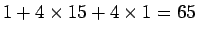
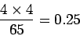
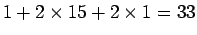
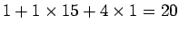

หน่วยความจำหลักใช้เทคโนโลยี DRAM เป็นหลัก ถึงแม้ว่าเป็นการยากที่จะทำการลดเวลาในการอ่านค่า Word แรกจากหน่วยความจำมายังโปรเซสเซอร์ แต่เราสามารถลดเวลาเมื่อเกิดการ Miss ได้โดยการเพิ่ม Bandwidth ในการส่งผ่านข้อมูลระหว่างแคช และหน่วยความจำหลัก โดยสามารถส่งผ่าน Block ขนาดใหญ่ โดยใช้เวลาเท่ากับ Block ขนาดเล็ก
โปรเซสเซอร์ต่อเชื่อมกับหน่วยความจำโดยผ่านบัส ซึ่งสัญญาณนาฬิกาที่ควบคุมบัสช้ากว่าสัญญาณนาฬิกาบนโปรเซสเซอร์มาก เป็นเหตุผลหนึ่งที่ทำให้ Miss Penalty มีค่ามาก
สมมุติให้ค่าการเข้าถึงหน่วยความจำต่างๆ มีดังต่อไปนี้
ในกรณีที่ Block ในแคชมีขนาด 4 Words และ บัสมีขนาดกว้างหนึ่ง Word ดังนั้น Miss Penalty จะเท่ากับ  วงรอบการทำงานของบัสหน่วยความจำ ดังนั้น จำนวน Byte ที่ส่งผ่านต่อ วงรอบการทำงานของบัสหน่วยความจำ เท่ากับ
|  | (7.8) |
รูป 7.9 แสดงการออกแบบระบบหน่วยความจำสามลักษณะ แบบที่สองเป็นการเพิ่ม Bandwidth ระหว่างแคชและหน่วยความจำหลัก ทำให้สามารถส่งผ่านข้อมูลได้ทีละ Block วิธีที่สามเป็นการเพิ่มขยายขนาดเฉพาะหน่วยความจำ แต่ขนาดของ Bus ยังเท่าเดิม
ในกรณีที่เพิ่มขนาดทั้งหน่วยความจำและบัสในกรณีที่สองนั้น Miss Penalty ของการเพิ่มขนาดเป็น สอง Word มีค่าเท่ากับ  ถ้าเพิ่มขนาดของหน่วยความจำและบัสเป็น 4 Word ค่า Miss Penalty จะมีค่าเท่ากับ 17 วงรอบการทำงาน หรื่อเท่ากับ 0.48 Byte ที่ส่งผ่านต่อ วงรอบการทำงานของบัสหน่วยความจำ และ 0.94 Byte ที่ส่งผ่านต่อ วงรอบการทำงานของบัสหน่วยความจำ ตามลำดับ
แทนที่เราจะทำการขยายขนาดทั้งหน่วยความจำและบัส เราสามารถจัดเรียงชิป DRAM ให้เป็น Bank เพื่อสามารถอ่านหลาย Word ที่เรียงต่อกันใน Block ได้ในการส่งแอดเดรสครั้งเดียว และทำการอ่านค่อออกมาพร้อมกัน วิธีการดังกล่าวเรียกว่า Interleaving ในระบบที่หนึ่ง Block มี 4 Words ค่า Miss Penalty จะมีค่าเท่ากับ  และได้ค่าจำนนวน Byte ที่ส่งผ่านต่อ วงรอบการทำงานของบัสหน่วยความจำ เท่ากับ 0.80